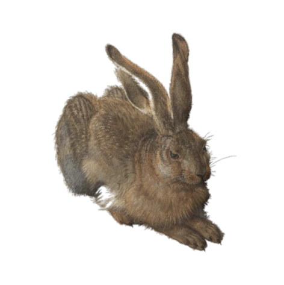
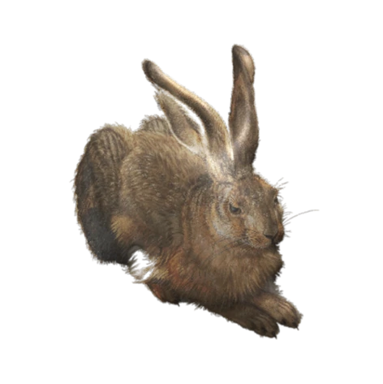
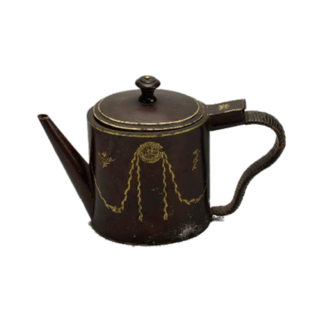

不去碰它，上面这只石榴就是一张画：水彩原本的颜色，光从左上方柔和地打过来。碰一下，会发生三件事：表面在指针下陷了进去；一圈圈波纹从凹处荡开，碰到果子的边缘又折回来；凡是表面在动的地方，都泛起缎子一样的光。手拿开，波纹慢慢平息，大约半分钟之内，页面就完全不再画它了。
这一切都不需要 3D 模型。silkify 只拿到一张图，其余的全靠自己推算出来。下面按计算机做事的顺序一步步讲。每一节先说你看到了什么，再说为什么会这样；公式留给想看的人，跳过去也不影响读。
01从轮廓到穹面
你看到的
物体像靠垫一样鼓起来。圆的果子鼓成一个球；细长的部分，比如兔子的耳朵，只微微隆起；整个表面处处光滑，中间没有一道接缝。
为什么
图片本身没有深度。silkify 能从图里拿到的只有一条轮廓：图片的透明区域；如果图片没有透明背景，就当成一个四角略圆的矩形。轮廓里面每一点该有多高，得它自己定。（文字也是这样：传入 text 而不是图片时，silkify 先把字排进一张画布，字形就是轮廓。）
最直接的办法是看距离：离最近的边越远，就越高。这对圆形没问题，换成别的形状几乎都不行。凡是两条边离得一样近的地方，坡向会突然转折，表面折出一道棱，像屋顶的屋脊。光会落在棱上，丝绸的高光也会顺着它走，看起来就像一道接缝。
silkify 换了个思路：把轮廓当成鼓面的边框，从下面处处用同样的力往上顶。受力均匀的膜折不出棱，因为每一点都恰好等于四周邻居的平均，再加上同样一点点抬升。写成方程，就是泊松方程：
这个方程只在物体初始化时解一次，默认放在 Web Worker 里算，页面不必等它。解法由粗到细：先在最多 61 × 61 个点的网格上粗算一遍，再到 121，再到 241（逐次超松弛迭代，分别扫 300、150、100 遍，这是在网格上解这类方程的常规做法）。最后轻轻模糊两遍，把轮廓压在网格上形成的锯齿磨圆；轮廓本身在绘制时仍按图片自己的透明度逐像素裁出来。
画廊里的月球跳过了这一步：它本来就是圆的，直接贴在一个真正的球上。
02月球的光
你看到的
静止时，物体看上去就是原来那张图：颜色没有往边缘一路变暗，也不像塑料。可光从侧面来时，暗面依然有一道干净的明暗分界。
为什么
教科书上的打光办法叫朗伯定律：一个点有多亮，取决于它有多正对着光。这样照一个穹面，越往边缘越暗。放在一张照片上，就成了一个刷了漆的塑料球，图不再像它自己。
可你看满月：它明明是个球，看起来却像一个均匀明亮的平面圆盘，边缘几乎和中心一样亮。月面的尘土会把光往来的方向散回去。描述这件事的定律由 Lommel 和 Seeliger 在十九世纪提出，它同时看两个角度：表面与太阳的夹角，以及表面与你眼睛的夹角。
当光大致从你站的方向照来，μ₀ 和 μ 差不多大，整个正面的亮度都接近 1：图保住了自己的颜色。表面一旦背过光去，亮度很快落到一条清晰的分界线上，也就是明暗界线。再加一个下限，让背光的一面不至于全黑（图片是满亮度的 0.55，球体默认是 0.05）。
朗伯亮度 = μ₀
Lommel–Seeliger，silkify 用的亮度 = 2μ₀ / (μ₀ + μ)
还有一盏光负责体积感：一片宽而柔和的渐变，跟着指针走。它挂在一根临界阻尼的弹簧上，所以会滑到指针所在的方向，却不会冲过头；在电脑上，物体闲着时它还会慢慢绕一圈。
03只在起涟漪的地方是丝绸
你看到的
缎子的光泽只出现在表面动的地方，随着涟漪平息而淡去。哪里是哑光的画、哪里是丝绸，中间找不到一条分界线。
为什么
silkify 对每个像素都量一量：涟漪让这里的表面动了多少，也就是被压下去或鼓起来多少、坡有多陡。由此得到一个 0 到 1 之间的数，它决定这里要掺进多少缎面和柔光，而且只掺在朝光的一面。
静止时这个数处处为 0，每个像素就是上一节那张哑光的画。表面一动，这个数平滑地升起来，两种材质于是渐渐融合，而不是一下子切换。那些本来就该在静止时发亮的材质，只是把它的下限抬高：satin 抬到 0.6，foil 抬到 1。

silkify 的默认做法只在起涟漪的地方是丝绸

去掉遮罩silkRest: 1，处处是丝绸
silkRest: 1），朝光的每个像素一直都是丝绸：不管动没动，皮毛上都浮着一层亮光，看上去像个上了釉的玩具，不再是一幅画。你的系统要求减弱动态效果，所以这两张是静态帧，都是刚被碰过一下的样子。04碰到边缘就折回的波纹
你看到的
按下去，一圈圈波纹从凹处往外跑，碰到轮廓又折回来。轮廓本身纹丝不动。
为什么
涟漪存放在显卡上一张小小的数字网格里，每格两个数：这里的表面有多高，以及它正以多快的速度移动。每一步，每一格都被拉向四个邻居的平均值，网格上的波动方程说到底就是这么回事；然后两个数都乘上 0.996，让波慢慢损失能量。指针在网格上压出一个凹坑，按住时压得更深。
轮廓之外，两个数每一步都被清零。对波来说那就是一堵墙，于是它被弹回来，跟浴缸里的水波一模一样。之后表面只沿着视线方向移动，朝你或背着你，从不往侧面偏，所以物体的边缘始终待在原地，永远不会翻折过去。
在显卡上，这张网格是两张存半精度数字的小纹理，一张读、一张写，每一步互换。求解器固定每秒走 60 步，不管屏幕刷新率是多少，所以涟漪在 60 Hz 的笔记本和 120 Hz 的手机上跑得一样快；在 Firefox 里把屏幕分别强制为 30、60、120 Hz，测得每秒 59.8、60.7、59.7 步。小物体用更粗的网格，每一步拆成几小步来走，常数也跟着换算，凹坑和波在它身上的大小与速度保持不变。最后一次触碰之后二十秒，波只剩原来高度的 1% 左右，网格随即清空。
05没人碰，就睡着
你看到的
什么都没有，这正是重点。一页摆满 silkify 物体，没人碰的时候，几乎不花任何代价。

碰一下，然后等着看你的系统要求减弱动态效果，所以这只茶壶是一张静态帧，页面一帧也不画。
只有落在物体上的指针才算数。页面别处移动的指针根本不会传给它，所以吵不醒它：在 Lab 里，指针在控制面板上移动、按住整整三秒，画出来的帧数是 0。滚出视野的物体，或者切到后台的标签页，会完全停下。breeze 和 autoplay 这两个会让它一直动的选项默认关闭，原因正在于此。
不占页面的线程
默认情况下，所有重活都在 Web Worker 里的 OffscreenCanvas 上完成：加载 three.js、解码图片、解泊松方程、编译着色器，以及每一帧的绘制。页面本身始终腾得出手来滚动和响应。浏览器不支持在 Worker 里渲染时，silkify 改到主线程上画；连 WebGL2 都没有时，就画一张静态帧。
三档，挂载时定一次
| 档位 | 什么时候选它 | 它做什么 |
|---|---|---|
high | 电脑级别的设备 | 像素比最高 2；涟漪网格最多 256 格，几何网格最多 240 段；闲置时补光绕一圈，然后睡下 |
low | 以触屏为主、屏幕长边不足 1024 px、不超过 4 核、不超过 4 GB，或者软件模拟的 GPU | 像素比 1；涟漪网格不超过 128 格，几何网格不超过 120 段；只在触碰前后画帧 |
static | 要求减弱动态效果、开了省流量、2G 网络、非常小的设备、没有 WebGL2 | 根本不加载 three.js；只画一次静态帧 |
用不上的东西它也一概不要。屏幕上的三角形从不重叠，轮廓又是逐像素裁出来的，所以不开抗锯齿缓冲，也没有深度和模板缓冲：一个 373 px 的物体在像素比 2 下，因此省下大约 18 MB。
从 69 到 99
这次提升几乎全来自一个很小的调用。0.2.0 版在页面加载时，靠新建一个用完即弃的 WebGL 上下文来检测 WebGL2。在真显卡上这要 15 到 240 毫秒；在 SwiftShader 上要 2.5 秒，而且全压在页面自己的线程上。SwiftShader 是无界面 Chrome 用的软件图形实现，silkify 自己的自动化测试也跑在它上面。0.2.1 版改为在 Worker 里直接问画布自己的上下文，那时连 three.js 都还没下载。
一页上有很多个
每个活着的物体都占一个 WebGL 上下文，而浏览器大约只允许 16 个。画廊的做法是：每张卡片先放一张静态帧，有人伸手去碰才让它活过来，卡片滚走就把上下文还回去，同时最多只留三个活着。这一页也是这么做的，只不过图会在你滚动到它时就活过来，不必等你伸手。此刻这一页上活着的：，上限 3 个。
06把网页的一部分印上去
你看到的
下面这张卡片不是一张卡片的图。选中上面的字、复制、用浏览器的查找功能找它、点它的链接：它就是普通的 HTML，碰一下照样会陷下去、起涟漪。
这些字是 HTML
选中这句话复制一下，或者用浏览器的查找功能找它：它是页面里的文字，印在丝绸上。
为什么
HTML-in-Canvas 是浏览器的一项新功能，Chrome 157 起可以用：画布可以容纳页面里真实的元素，并把它们画进自己的画面。silkify 先按元素自己的盒子（尺寸、圆角、背景色）做一个替身，用它搭出穹面，再把元素本身印上去。元素的圆角，就成了丝绸的轮廓。
元素始终是页面的一部分，所以选中、链接、查找、读屏软件都照常可用。元素的样子一变（换了文字、指针悬停、选中了一段、光标闪烁），浏览器就通知画布，每变一次，就重印一次、画一帧。从变化发生到新印好的画面交给显卡，大约 2 毫秒。什么都没变，就什么都不画。浏览器没有这项功能，或者要求减弱动态效果时，元素原地不动，就是普通的 HTML，控制台里也什么都不记。
—接下来
silkify 最早是作者个人网站上的一轮「丝绸月球」。这个库把它推广到任意轮廓，为此加上了泊松穹面、正交相机、沿视线方向的位移，以及被关在轮廓里的波。